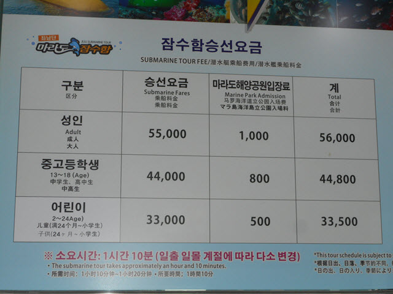
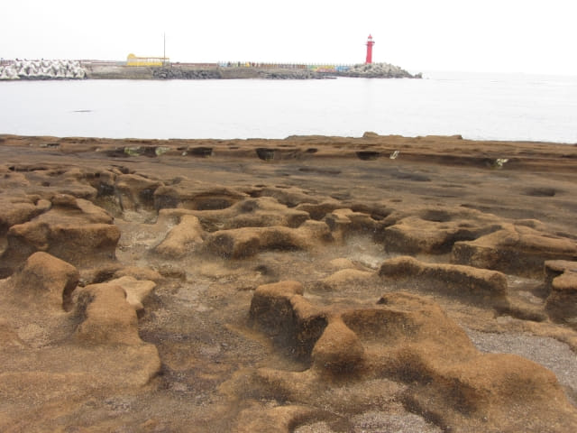

在沙溪港七大秘境之一的沙溪港春志燈臺看著船隻進出漁港, 十分寫意, 逗留了一會, 便循防波長堤走到燈塔對面的潛水艇碼頭, 和她會合。
離開防波長堤, 轉左沿海岸的馬路走一會, 又來到偶來10號小路的其中一段。
不一會便來到潛水艇碼頭 (潛水艇搭乘處)的入口處的海堤。
海堤入口處有漁民將一些紅色蠕動的海產 (是否海参?)從黑色的膠袋取出來, 急急的放進竹籮內, 然後放入海中飼養。哈哈~~ 利用天然海水飼養海產, 真懂得利用海的資源。
海堤入口處入口的右邊有一個海女的雕像, 十分得意。
潛水艇搭乘處
沿海堤走一會便來到潛水艇搭乘處。哈哈~~ 是一艘 Yellow Submarine。
We all live in a yellow submarine
Yellow submarine, yellow submarine
從潛水艇搭乘處看紅色的沙溪港春志燈臺和船隻進出漁港, 又是另一番景色。

Yellow Submarine 也起航了!
離開海堤, 看見時間尚早, 便繼續在沙溪港四處閒逛。
經過濟州潛水艇售票處。好奇之下, 推門進內看看搭乘潛水艇的票價。
這艘才像潛水艇呢! 莫非剛才在潛水艇搭乘處所看到的是轉駁船?
嘩! 潛水艇票價是55,000韓元!

離開潛水艇售票處, 沿海濱的偶來10號小路走, 路旁有販賣海產的雕像: 一個海女手持一個竹籮, 另一個海女將一個海產販賣給一位市民。看清楚, 應該就是剛才在海堤入口處看到漁民放進竹籮內紅色蠕動的海產。想不到剛才無意中看到這故事的上半部份!

雕像下有當年海女販賣的實況照片和介紹。
繼續沿海濱的偶來10號小路向前走。
沿途都可以看到海中紅色的沙溪港春志燈臺。
來到一由處地面凹凹凸凸的海邊, 應該是由海水及風侵蝕所形成的。

如果沿海濱的偶來10號小路繼續向前走便可到達海灣盡頭處的松岳山 (송악산), 看來不是很遠呢, 而且路線十分簡單, 沿海岸一直走便是, 除非又是有什麼工程。按原定計劃, 我們便是從這裡繼續步行往松岳山的, 可惜因上午的行程延誤了, 最後決定取消, 感覺有些可惜, 畢竟重遊濟州島的機會真是很渺小。